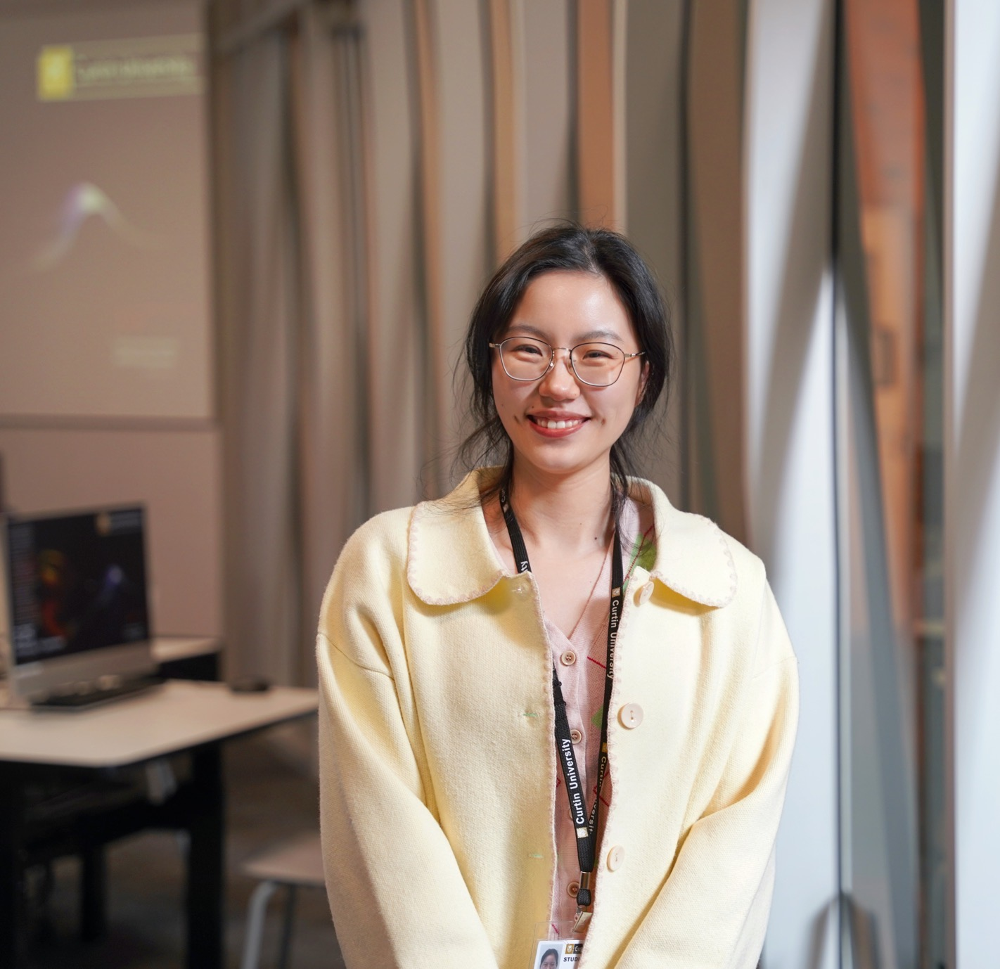

Lingxue (Lucia) Zhan
Email: lucia.zlxlx@gmail.com
I obtained my PhD at the Social Media Research Lab @ Curtin University, advised by Prof. Mingming Cheng. Before that, I obtained my Master of Economics at the Shenzhen University, advised by Prof. Liang Zhu. My research interests broadly lie in Social Media and Tourism Marketing.
News
2026: Receive the Chancellor’s Commendation for an Exceptional PhD Degree (Top 5%).
2026: Receive the HDR Research Excellence Award by Curtin University.
2026: One paper got accepted by Annals of Tourism Research!
2026: One paper got accepted by Journal of Hospitality & Tourism Research!
2026: One paper got accepted by Journal of Travel Research!
2026: One paper got accepted by Energy Research & Social Science!
2025: One paper got accepted by Journal of Hospitality and Tourism Management!
2024: Receive the Best HDR Student Paper Award!
2023: One paper got accepted by Tourism Management!
2022: I join SMRL Lab @ Curtin Univ. as a Ph.D. student!
Publications
✉ indicates corresponding author
-
When Visuals Meet People with Disabilities: How Destination Image Featuring Disability Drives Travel Intention?
Mengfan Li, Lingxue Zhan, Litang Wen, Ji Chen, Mingming Cheng
Journal of Travel Research, 2026. (Q1, ABDC: A*) -
Shaping the energy transition: Digital media discourse and public engagement in regional Australia
Mingming Cheng, Lingxue Zhan✉, Shiyi Hu, Jingjie Zhu, Fran Ackermann, Raquel Tardin-Coelho, Emma D'Antoine
Energy Research & Social Science, 2026. (Q1) -
Tourism destination stereotypes and generative artificial intelligence (GenAI) generated images
Jingjie Zhu, Lingxue Zhan, Jie Tan, Mingming Cheng
Current Issues in Tourism, 2024. (Q1, ABDC: A) -
Is sustainable development reasonable for tourism destinations? An empirical study of the relationship between environmental competitiveness and tourism growth
Liang Zhu, Lingxue Zhan, Shaobo Li.
Sustainable Development, 2021. (Q1)
Teaching
-
MKTG2006 Managing Social Media Platforms
Teaching Assistant
[Link], July 2024. -
Managing Social Media Crises - A Case Study of Singapore Airlines
Mingming Cheng, Jie Tan, Lingxue Zhan
[Link], Sept 2024.
Awards
- Chancellor’s Commendation for an Exceptional PhD Degree (Top 5%), Curtin University, 2026.
- HDR Research Excellence Award (1 awarded annually at the school), Curtin University, 2026.
- Best HDR Student Paper Award, Feb 2024.
- IFITT Journal Paper of the Year Award (2nd Place), Jan 2024.
- Curtin Scholarship, Since 2022.
- Outstanding Graduates at SZU, June 2022.
- China National Scholarship, Dec 2020.
- Tencent Founder Innovative Scholarship, Dec 2020.
Professional Service
- Co-organize the Australia - Japan Tourism Symposium, Dec 2022.
- Co-investigate the CIET Energy Transition Project, Jan 2025.
Reviewer
- Journals: Tourism Management, Journal of Hospitality and Tourism Management
- Conferences: CAUTHE, ANZMAC